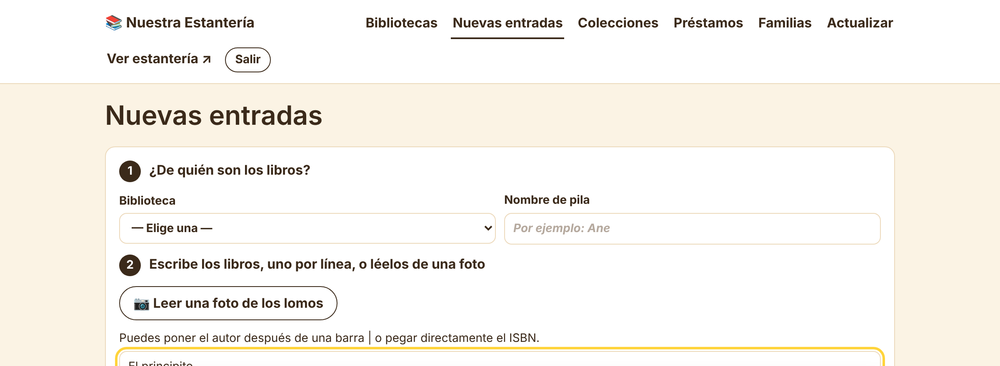
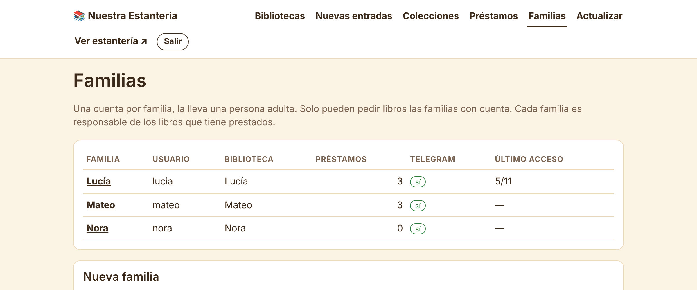
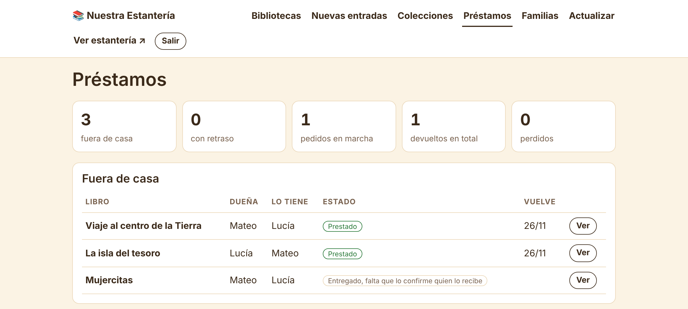
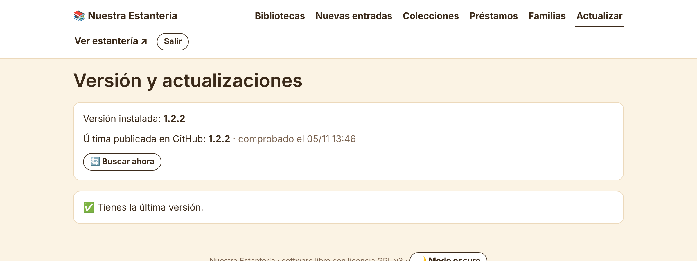

Manual de administración
Instalación, configuración y uso diario · versión 1.2
github.com/hombrelobo2/biblioteca
Nuestra Estantería es una web para un grupo de familias. Cada familia enseña los libros que tiene en casa y se los pueden prestar entre ellas. Tiene tres zonas:
| Zona | Dirección | Quién la usa |
|---|---|---|
| Estantería | / | Todo el mundo. Muestra los libros y si están prestados (nunca quién los tiene). |
| Mi cuenta | /cuenta | Cada familia, con su usuario y contraseña: pedir libros, confirmar entregas y devoluciones. |
| Administración | /admin | Solo tú: libros, familias, préstamos, copias y actualizaciones. |
Todo vive dentro de un contenedor LXC de Proxmox, con estas piezas:
/var/lib/estanteria/estanteria.db.En la web de Proxmox, abre la consola del nodo (Datacenter → tu nodo → Shell) y pega:
bash -c "$(curl -fsSL https://raw.githubusercontent.com/hombrelobo2/biblioteca/main/proxmox/estanteria.sh)"
El script hace unas preguntas. Pulsa Enter para aceptar el valor que va entre corchetes:
| Pregunta | Qué poner |
|---|---|
| Número del contenedor | El primero libre (lo propone él). |
| Almacenamiento del disco | Normalmente local-lvm o local-zfs. |
| Disco, núcleos, memoria | Los valores propuestos (4 GB, 1 núcleo, 512 MB) sobran para cientos de libros. |
| IP | dhcp, o mejor una fija como 192.168.1.50/24 para que el proxy la encuentre siempre. |
| Puerta de enlace y DNS | La de tu router (p. ej. 192.168.1.1). El DNS vacío usa el del host. |
| Contraseñas | La de root del contenedor y la de administración de la web. Con Enter se inventa una. |
| Dirección pública, Telegram, Gemini | Opcionales: se pueden poner después (capítulos 5 a 7). |
Después, sin que hagas nada más:
🎉 Listo
Estantería: http://192.168.1.50/
Administración: http://192.168.1.50/admin/
Contraseña admin: ********
Root del LXC: ******** (entra con: pct enter 114)
Si usas una versión antigua del script pueden salir durante la instalación. Son inofensivos: solo dicen que el idioma del host no está instalado en el contenedor.
apt-get update && apt-get install -y curl curl -fsSL https://github.com/hombrelobo2/biblioteca/archive/refs/heads/main.tar.gz | tar -xz cd biblioteca-main && bash install.sh
Te pide la contraseña de administración. La web queda en el puerto 80.
http://IP-DEL-CONTENEDOR/admin/ y entra con la contraseña de administración.Entra en el contenedor (pct enter 114) y ejecuta estanteria-cambiar-clave.
Para que las familias entren desde su casa, pon un proxy con HTTPS delante del contenedor.
estanteria.midominio.com). Scheme: http. Forward Hostname / IP: la IP del contenedor. Port: 80. Marca Block Common Exploits.En Zero Trust → Networks → Tunnels, añade un Public Hostname con servicio http://IP-DEL-CONTENEDOR:80.
| Ruta | ¿Desde internet? |
|---|---|
/, /libros.json, /resumenes.json, /portadas/ | Sí: es la estantería. |
/cuenta | Sí: las familias entran, piden y confirman. |
/admin | Mejor no: solo desde tu red de casa. |
En tu Proxy Host, pestaña Custom Locations, añade la ubicación /admin hacia la misma IP y el puerto 80. Pulsa el engranaje ⚙ y escribe:
allow 192.168.1.0/24; deny all;
Desde casa sigues entrando con http://IP-DEL-CONTENEDOR/admin/.
Después, escribe la dirección pública en ESTANTERIA_URL (capítulo 5). Así los enlaces de invitación y los botones de Telegram llevan a la dirección buena.
Deja ESTANTERIA_COOKIE_SECURE=0. La web marca la cookie como segura sola cuando llega por HTTPS, y así puedes seguir entrando por http://IP desde casa.
Las claves y opciones están en /etc/estanteria/estanteria.env, dentro del contenedor:
# 1. Desde el host de Proxmox, entra en el contenedor (cambia 114 por tu número) pct enter 114 # 2. Edita el archivo. Guarda con Ctrl+O y Enter; sal con Ctrl+X nano /etc/estanteria/estanteria.env # 3. Reinicia para que se apliquen los cambios systemctl restart estanteria estanteria-bot
| Variable | Para qué sirve |
|---|---|
ESTANTERIA_URL | Dirección pública con https://. Para invitaciones y Telegram. |
TELEGRAM_BOT_TOKEN | Token del bot (capítulo 6). Vacío = sin avisos. |
GEMINI_API_KEY | Clave de Gemini (capítulo 7). Activa la foto de lomos y los resúmenes. |
GEMINI_MODEL | Opcional: modelo que se prueba primero. Si falla, prueba otros solo. |
GOOGLE_BOOKS_KEY | Opcional: quita el límite diario de Google Books. |
ESTANTERIA_PLAZO_DIAS | Días de préstamo. Por defecto 21. |
ESTANTERIA_REPO | De qué repositorio de GitHub se actualiza. Por defecto el oficial. |
ESTANTERIA_COOKIE_SECURE | Déjalo en 0 (ver capítulo 4). |
ESTANTERIA_SECRET_KEY, ESTANTERIA_ADMIN_HASH | Los crea el instalador. No hace falta tocarlos. |
Contiene tus claves. No lo copies en chats, foros ni capturas. Si una clave se ve por error, créala de nuevo (en BotFather o en AI Studio) y sustituye la antigua.
Con Telegram, las familias reciben un aviso cuando les piden un libro, cuando se lo devuelven y antes de que venza un préstamo, con botones para confirmar sin abrir la web. Tú recibes los desacuerdos y una copia de la base de datos cada domingo.
/newbot.bot, p. ej. estanteria_del_cole_bot.123456789:AAH…. Cópialo./setuserpic para ponerle foto y /setdescription para la descripción.TELEGRAM_BOT_TOKEN y la dirección en ESTANTERIA_URL, y reinicia (capítulo 5).La estantería le pregunta a Telegram por los mensajes nuevos. Si el bot lo usa otro programa o tiene un webhook, no funcionará: crea uno nuevo.
Gemini es la inteligencia artificial de Google. En la estantería se usa para dos cosas:
Sin Gemini todo lo demás funciona igual: escribes los títulos a mano y los resúmenes los escribes tú.
AIza….GEMINI_API_KEY y reinicia (capítulo 5). En Nuevas entradas aparecerá el botón 📷 Leer una foto de los lomos.Sin clave, Google Books permite pocas búsquedas al día. Si ves «Google Books: error 429», crea una clave:
GOOGLE_BOOKS_KEY y reinicia.Las demás fuentes (Todostuslibros, Elkar y Open Library) no necesitan clave.

Gigantosaurio | Jonny Duddle, o pegar el ISBN. También puedes leerlos de una foto de los lomos.Si un libro ya está en esa biblioteca o lo has escrito dos veces, te avisa.
Salen marcados como «✨ resumen IA · sin revisar». Ábrelos en Editar, léelos y marca «lo he revisado» (o cambia el texto). En el panel ves cuántos quedan en cada biblioteca.

Cada familia tiene una cuenta, que lleva una persona adulta. Solo las familias con cuenta pueden pedir libros, y cada familia responde de los libros que tiene prestados.
| Para… | Haz esto |
|---|---|
| Contraseña olvidada | Abre la familia → Nuevo enlace. Con él ponen una contraseña nueva. |
| Cambiar sus bibliotecas | Abre la familia y marca o desmarca. También desde la página de cada biblioteca. |
| Que no pueda entrar | Quita «Cuenta activa». Su historial se conserva. |
| Borrarla | Abajo del todo, escribiendo su nombre. Solo si no tiene préstamos en marcha. En el historial de las demás sale como «Familia borrada». |
| Quitarle Telegram | Abre la familia → Desvincular Telegram. |
Una biblioteca sin familia dueña se ve en la estantería, pero sus libros no se pueden pedir. Lo mismo pasa si la familia la marca como «solo para mirar».
La regla: quien dice algo que le conviene necesita que la otra familia lo confirme. «Te lo he dado» lo confirma quien lo recibe, y «Te lo he devuelto» lo confirma la dueña.
| Paso | Quién | Botón | Queda |
|---|---|---|---|
| 1 | Quien lo quiere | «¿Me lo prestas?» en la estantería | Pedido |
| 2 | Dueña | «Aceptar» o «Ahora no puedo» | Aceptado |
| 3 | Dueña | «Ya se lo he dado» | Entregado |
| 4 | Quien lo recibe | «Lo tenemos» | Prestado (21 días) |
| 5 | Quien lo tiene | «Ya lo hemos devuelto» | Falta confirmar |
| 6 | Dueña | «Ya lo tengo de vuelta» | Devuelto |

Si una familia pulsa «No lo hemos recibido» o «No me ha llegado», el préstamo queda en desacuerdo: te llega un aviso y sale arriba en /admin → Préstamos. Habla con las dos familias y en Ver decide cómo queda: sigue prestado, devuelto, cancelado o perdido. Se avisa a las dos. Desde ahí también puedes cambiar la fecha de devolución, y todo queda en el historial del préstamo.
| Copia | Cuándo | Dónde |
|---|---|---|
| Base de datos + portadas | Cada día (14 días) | /var/backups/estanteria/ |
| Base de datos | Antes de cada actualización | /var/backups/estanteria/ |
| Base de datos | Cada domingo | Tu Telegram de administración |
| Todo en un .zip | Cuando pulses el botón | Panel → Descargar copia |
Restaurar: en el panel, Importar una copia de seguridad. Sirve el .zip del panel (con portadas) o la base de datos sola (.db, o el .db.gz de Telegram). Se sustituyen todos los datos, y lo que había se guarda antes en /var/lib/estanteria/copias/.
Las copias de dentro del contenedor no sirven si se rompe el disco. En Proxmox, programa una copia en Datacenter → Backup → Add, a otro disco o a un Proxmox Backup Server, y descarga el .zip de vez en cuando.

En /admin → Actualizar ves la versión instalada, la última publicada en GitHub y sus novedades. Pulsa Instalar y sigue el registro en directo: la web se reinicia al final. Si hay versión nueva, el menú lo muestra con 🎉 y te avisa una vez por Telegram. Se conservan los datos, las contraseñas y la configuración, y antes se guarda una copia.
También desde el host de Proxmox:
bash -c "$(curl -fsSL https://raw.githubusercontent.com/hombrelobo2/biblioteca/main/proxmox/estanteria.sh)" -- actualizar 114
Las instalaciones anteriores a la versión 1.1 se actualizan la primera vez así. Después ya pueden hacerlo desde la web.
Dentro del contenedor (pct enter 114 desde el host):
| Para… | Comando |
|---|---|
| Actualizar | estanteria-actualizar |
| Cambiar la contraseña de admin | estanteria-cambiar-clave |
| Aplicar cambios del .env | systemctl restart estanteria estanteria-bot |
| Ver errores de la web | journalctl -u estanteria -n 50 |
| Ver errores del bot | journalctl -u estanteria-bot -n 50 |
| Mandar ya los recordatorios | systemctl start estanteria-tareas |
| Ver cuándo tocan las tareas | systemctl list-timers estanteria-tareas.timer |
| Problema | Solución |
|---|---|
| Carga con la IP pero no con el dominio | Revisa que el proxy apunte a la IP del contenedor y al puerto 80 (no a localhost). |
| «Formulario caducado» | Recarga la página. Si pasa siempre por HTTPS, comprueba que el proxy manda X-Forwarded-Proto (Nginx Proxy Manager lo hace). |
| «Google Books: error 429» | Se acabó el cupo diario: pon GOOGLE_BOOKS_KEY (capítulo 7). Las otras fuentes siguen funcionando. |
| No sale el botón de la foto | Falta GEMINI_API_KEY o no has reiniciado. |
| Gemini da error 503 o «ocupado» | Hay mucha demanda: se reintenta solo con otros modelos. Prueba más tarde. |
| No llegan avisos de Telegram | Mira journalctl -u estanteria-bot. Unauthorized = token mal copiado. Conflict o webhook = el bot se usa en otro sitio: crea uno nuevo. |
Las invitaciones salen con http://IP | Rellena ESTANTERIA_URL y reinicia. |
| Los recordatorios salen a otra hora | Zona horaria del contenedor: timedatectl set-timezone Europe/Madrid. |
| El contenedor no tiene internet | En el host: pct config 114 para ver la red; pct set 114 --nameserver 1.1.1.1 para poner un DNS. |
Abre una incidencia en github.com/hombrelobo2/biblioteca/issues. Nuestra Estantería es software libre con licencia GNU GPL v3.